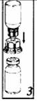

RÉSUMÉ DES CARACTÉRISTIQUES DU PRODUIT
ANSM - Mis à jour le : 13/02/2012
MONONINE 1000 UI/10 ml, poudre et solvant pour solution injectable ou perfusion
2. COMPOSITION QUALITATIVE ET QUANTITATIVE
Un flacon de poudre contient 1000 UI de facteur IX de coagulation humain.
Après reconstitution avec 10 ml d'eau pour préparation injectable, 1 ml contient:
Facteur IX de coagulation humain ................................................................................................... 100 UI/ml
L'activité (UI) est déterminée à l'aide d'une méthode de coagulation en un temps de la Pharmacopée européenne. L'activité spécifique moyenne de Mononine 1000 n'est pas inférieure à 190 UI/mg de protéine.
Excipient ayant un effet notoire connu:
Sodium (sous forme de chlorure): jusqu'à 20,3 mg
Pour la liste complète des excipients, voir rubrique 6.1.
Poudre et solvant pour solution injectable ou perfusion.
4.1. Indications thérapeutiques
Traitement et prophylaxie des hémorragies chez les patients atteints d'hémophilie B (déficit congénital en facteur IX).
4.2. Posologie et mode d'administration
Le traitement doit être initié sous la surveillance d'un médecin expérimenté dans le traitement de l'hémophilie.
Posologie
La dose et la durée du traitement de substitution dépendent de la sévérité du déficit en facteur IX, de la localisation et de l'ampleur de l'hémorragie et de l'état clinique du patient.
Le nombre d'unités de facteur IX administrées est exprimé en Unités Internationales (UI), calculées en accord avec la norme OMS pour le facteur IX. L'activité plasmatique du facteur IX est exprimée soit en pourcentage (par rapport au plasma humain normal), soit en Unités Internationales (par rapport à la norme internationale pour le facteur IX plasmatique).
Une Unité Internationale (UI) d'activité facteur IX correspond à la quantité de facteur IX présente dans un ml de plasma humain normal. Le calcul de la dose nécessaire de facteur IX repose sur l'observation empirique selon laquelle 1 UI de facteur IX par kg de poids corporel augmente l'activité plasmatique du facteur IX de 1,0 % par rapport à l'activité normale. La dose requise est calculée au moyen de la formule suivante:
Nombre d'unités requises = poids corporel [kg] x augmentation de facteur IX souhaitée [% ou UI/dl] x 1,01
(1: inverse de la récupération observée)
La quantité à administrer, le mode ainsi que la fréquence d'administration doivent toujours être déterminés en fonction de l'efficacité clinique dans chaque cas individuel. Les produits contenant du facteur IX exigent rarement d'être administrés plus d'une fois par jour lorsqu'ils sont administrés sous forme de bolus.
Dans le cas des accidents hémorragiques suivants, l'activité du facteur IX ne doit pas descendre sous le taux d'activité plasmatique indiqué (en % par rapport à la normale ou UI/dl) pour la période correspondante. Les tableaux suivants fournissent des indications concernant le dosage en cas d'hémorragies et de chirurgie:
|
Tableau 1: Injection Intraveineuse Unique |
|||
|
Ampleur de l'hémorragie/ |
Niveau de facteur IX requis (% ou UI/dl) |
Fréquence des injections (heures)/Durée de la thérapie (jours) |
|
|
Hémorragie |
|
|
|
|
Hémarthrose précoce, hémorragie musculaire ou buccale. |
20 - 40 |
Répéter toutes les 24 heures. Au moins 1 jour, jusqu'à l'arrêt de l'épisode hémorragique, représenté par l'arrêt des douleurs ou la cicatrisation |
|
|
Hémarthrose étendue, hémorragie musculaire ou hématome |
30 - 60 |
Répéter la perfusion toutes les 24 heures pendant 3 - 4 jours ou davantage, jusqu'à disparition de l'invalidité et de la douleur |
|
|
Hémorragies menaçant le pronostic vital |
60 - 100 |
Répéter la perfusion toutes les 8 à 24 heures jusqu'à disparition de la menace. |
|
|
Chirurgie |
|
|
|
|
Mineure, y compris extraction dentaire |
30 - 60 |
Toutes les 24 heures, au minimum pendant 1 jour, jusqu'à cicatrisation |
|
|
Majeure |
80 - 100 |
Répéter la perfusion toutes les (pré- et postopératoire) 8 à 24 heures jusqu'à cicatrisation adéquate de la plaie, puis poursuivre la thérapie au moins 7 jours supplémentaires pour maintenir une activité du facteur IX entre 30 % et 60 % (UI/dl). |
|
|
Tableau 2: Perfusion Continue en Chirurgie |
|
|
|
|
|
Niveau de facteur IX souhaité pour l'hémostase |
40 - 100 % (ou UI/dl) |
|
Dose de charge initiale pour atteindre le niveau souhaité |
Bolus unique de 90 UI par kg (intervalle 75 - 100 UI/kg) de poids corporel ou posologie déterminée par la pharmacocinétique |
|
Fréquence d'administration |
Perfusion IV continue, en fonction de la clairance et des taux de facteur IX mesurés |
|
Durée du traitement |
Jusqu'à 5 jours, un traitement supplémentaire peut être nécessaire en fonction de la nature de la chirurgie |
Pendant la durée du traitement, il est recommandé d'effectuer des dosages du facteur IX plasmatique afin d'ajuster les doses à administrer et la fréquence des perfusions. Une surveillance étroite du traitement de substitution au moyen de bilans de la coagulation (activité plasmatique du facteur IX) est indispensable, en particulier dans le cas d'interventions chirurgicales majeures. La réponse à l'administration de facteur IX peut varier selon les patients, avec des valeurs différentes de la récupération in vivo et avec différentes valeurs de la demi-vie.
Pour la prophylaxie anti-hémorragique à long terme chez les patients atteints d'une forme sévère d'hémophilie B, les doses habituelles sont de 20 à 40 UI de facteur IX par kg de poids corporel, à intervalles de 3 à 4 jours. Dans certains cas, en particulier chez les sujets jeunes, il peut être nécessaire d'envisager des intervalles d'administration plus rapprochés ou des doses supérieures.
Les patients doivent être surveillés à la recherche de l'apparition d'inhibiteurs du facteur IX. Dans les cas où les taux d'activité plasmatique du facteur IX prévus ne sont pas atteints, ou lorsque l'hémorragie n'est pas maîtrisée après une dose pourtant appropriée, un test devra être effectué afin de déterminer la présence d'un inhibiteur du facteur IX. Chez les patients présentant un titre élevé d'inhibiteur, la thérapie par le facteur IX peut ne pas être efficace et d'autres alternatives thérapeutiques doivent être envisagées.
La prise en charge de tels patients nécessite l'intervention de médecins spécialistes expérimentés dans les soins aux patients atteints d'hémophilie.
Mode d'administration
Reconstituer le produit comme décrit à la section 6.6. Avant administration, la préparation doit être amenée à la température ambiante ou corporelle. Mononine 1000 doit être administré par voie intraveineuse, lentement, de manière à pouvoir surveiller l'éventuelle survenue d'une réaction immédiate. En cas de survenue d'une réaction paraissant liée à l'administration de Mononine 1000, la perfusion devra être ralentie ou interrompue, selon l'état clinique du patient (voir également section 4.4).
Injection intraveineuse unique
Piquer la veine avec le set de perfusion fourni. Relier la seringue à l'extrémité luer-lock du dispositif.
Injecter lentement par voie intraveineuse à un débit confortable pour le patient (max. 2 ml/min).
Perfusion continue
Mononine 1000 doit être reconstitué avec de l'eau pour préparations injectables comme décrit en rubrique 6.6. Après reconstitution, Mononine 1000 peut être administré sous perfusion continue non dilué à l'aide d'une seringue électrique.
L'activité de la solution reconstituée, non diluée de Mononine 1000 est d'environ 100 UI/ml.
Une solution diluée est obtenue de la façon suivante:
· Diluer la solution reconstituée et filtrée par transfert d'une quantité appropriée de Mononine dans le volume souhaité de sérum physiologique de manière aseptique.
· Pour les dilutions jusqu'à 1: 10 (concentration de 10 UI de facteur IX/ml), l'activité du facteur IX reste stable jusqu'à 24 heures.
· Une diminution de l'activité facteur IX peut apparaître pour des facteurs de dilution plus importants. L'activité facteur IX doit être surveillée afin de maintenir le taux sanguin souhaité.
Exemple pour diluer 1000 UI de solution Mononine reconstituée:
|
Activité souhaitée après dilution |
10 UI/ml |
20 UI/ml |
|
|
Volume de solution reconstituée de Mononine |
10,0 ml |
10,0 ml |
|
|
Volume de sérum physiologique nécessaire |
90,0 ml |
40,0 ml |
|
|
Facteur de dilution |
1: 10 |
1: 5 |
· L'utilisation de poches et de tubulures IV en chlorure de polyvinyle (PVC) est recommandée.
· Mélanger soigneusement et vérifier l'absence de fuites au niveau de la poche.
· Il est recommandé de remplacer les poches par une nouvelle solution diluée de Mononine toutes les 12 - 24 heures.
Le débit recommandé pour la perfusion continue de Mononine 1000 destinée à maintenir un niveau stable de facteur IX d'environ 80 % est de 4 UI/kg de poids corporel/heure, mais il peut varier en fonction du profil pharmacocinétique du patient et du niveau du facteur IX que l'on souhaite atteindre. Chez les patients dont la clairance du facteur IX est connue, le débit de perfusion peut être calculé pour un patient donné.
Débit (UI/kg de poids corporel/h) = Clairance (ml/h/kg de poids corporel) × augmentation souhaitée du facteur IX (UI/ml).
La tolérance et l'efficacité chez les enfants n'ont pas été étudiés pour les perfusions continues (voir rubrique 4.4).
C'est pourquoi, chez l'enfant et l'adolescent, la perfusion continue de Mononine 1000 sera envisagée seulement si les données pharmacocinétiques pré-chirurgicales (à savoir récupération progressive et clairance) sont disponibles pour le calcul de la dose et si les taux sont soigneusement surveillés en péri-opératoire.
Hypersensibilité à la substance active ou à l'un des constituants.
Allergie connue aux protéines murines.
Risque élevé de thrombose ou de coagulation intravasculaire disséminée (voir également 4.4).
4.4. Mises en garde spéciales et précautions d'emploi
Comme tout produit intraveineux à base de protéines, des réactions d'hypersensibilité de type allergique sont possibles. Mononine 1000 contient des traces de protéines murines (l'anticorps monoclonal murin utilisé dans son procédé de purification). Bien que les taux de protéines murines soient extrêmement faibles (≤ 50 ng de protéines murines/100 UI), la perfusion de telles protéines peut théoriquement induire des réponses d'hypersensibilité.
Les patients doivent être informés des signes précoces de réactions d'hypersensibilité tels que urticaire, urticaire généralisée, oppression thoracique, respiration sifflante, hypotension, et anaphylaxie. Si ces symptômes apparaissent, les patients doivent être prévenus de la nécessité d'arrêter immédiatement le produit et de contacter leur médecin.
En cas de choc, le traitement médical habituel de l'état de choc doit être observé.
Mononine 1000 contient 20,3 mg de sodium par 1000 UI. Ceci est à prendre en considération en cas de régime hyposodé contrôlé.
Après un traitement répété par un facteur IX de coagulation humain, les patients doivent être surveillés afin de prévenir le développement d'anticorps neutralisants (inhibiteurs), qu'il convient de quantifier en Unités Bethesda (UB) à l'aide d'un test biologique approprié.
La littérature a montré une corrélation entre la présence d'un inhibiteur du facteur IX et certaines réactions allergiques. C'est pourquoi il convient de rechercher chez les patients présentant des réactions allergiques la présence d'un inhibiteur. Il doit être noté que les patients ayant des inhibiteurs du facteur IX peuvent présenter un risque accru d'anaphylaxie lors d'injection ultérieure de facteur IX.
Etant donné le risque de réactions allergiques avec les concentrés de facteur IX, les premières administrations de facteur IX doivent, si le médecin traitant le juge opportun, être effectuées sous surveillance médicale avec possibilité de prise en charge des réactions allergiques.
L'utilisation de concentrés de complexe de facteur IX ayant historiquement été associée au développement de complications thrombotiques, le risque étant plus élevé avec les préparations de faible pureté, l'utilisation de produits contenant du facteur IX peut être potentiellement dangereuse chez les patients ayant des signes de fibrinolyse ou une coagulation intravasculaire disséminée (CIVD). En raison du risque potentiel de complications thromboemboliques, une surveillance clinique destinée à détecter les signes précoces de coagulopathie thrombotique ou de coagulation de consommation devra être initiée à l'aide de tests biologiques appropriés lors de l'administration de ce produit chez des patients atteints d'affection hépatique, en période postopératoire, chez les nouveau-nés ou chez les patients présentant un risque de phénomène thrombotique ou de CIVD. Dans chacune de ces situations, le bénéfice du traitement par Mononine 1000 doit être évalué par rapport au risque de ces complications.
Il n'existe pas de données sur la tolérance et l'efficacité des perfusions continues chez les enfants, en particulier le risque de développement d'inhibiteurs est inconnu (voir rubrique 4.2).
Sécurité virale
Les mesures habituelles de prévention du risque de transmission d'agents infectieux par les médicaments préparés à partir de sang ou de plasma humain comprennent la sélection clinique des donneurs, la recherche des marqueurs spécifiques d'infection sur chaque don et sur les mélanges de plasma ainsi que la mise en œuvre dans le procédé de fabrication d'étapes efficaces pour l'inactivation/élimination virale. Cependant, lorsque des médicaments préparés à partir de sang ou de plasma humain sont administrés, le risque de transmission d'agents infectieux ne peut pas être totalement exclu. Ceci s'applique également aux virus inconnus ou émergents ou autres types d'agents infectieux.
Les mesures prises sont considérées comme efficaces vis-à-vis des virus enveloppés tels que le VIH, le VHB, le VHC, et des virus non enveloppés tels que le VHA et le Parvovirus B19.
Une vaccination appropriée (hépatites A et B) des patients recevant des facteurs de coagulation est recommandée.
4.5. Interactions avec d'autres médicaments et autres formes d'interactions
Aucune interaction du facteur IX de coagulation humain avec d'autres médicaments n'est connue.
Il n'existe que peu de données sur l'utilisation de l'acide ε-amino caproïque à la suite d'une perfusion initiale de Mononine 1000 dans la prévention ou le traitement de saignements oraux consécutifs à des traumatismes ou à des interventions stomatologiques telles que des extractions dentaires.
Les études sur la reproduction animale n'ont pas été conduites avec le facteur IX. Etant donné la faible fréquence de l'hémophilie B chez la femme, aucune expérience n'est disponible sur l'utilisation de facteur IX pendant la grossesse et l'allaitement.
C'est pourquoi, le facteur IX ne doit être utilisé au cours de la grossesse et de l'allaitement qu'en cas de nécessité absolue.
4.7. Effets sur l'aptitude à conduire des véhicules et à utiliser des machines
Aucun effet sur l'aptitude à conduire des véhicules et à utiliser des machines n'a été observé.
Les effets indésirables suivants sont issus du suivi post-marketing ainsi que des revues de la littérature. Les catégories standards de fréquence utilisées sont les suivantes:
|
Très fréquent |
≥ 1/10 |
|
|
Fréquent |
≥ 1/100 et < 1/10 |
|
|
Peu fréquent |
≥ 1/1000 et < 1/100 |
|
|
Rare |
≥ 1/10000 et < 1/1000 |
|
|
Très rare |
< 1/10000 (y compris les cas isolés) |
Affections rénales et urinaires
L'apparition d'un syndrome néphrotique après tentative d'induction d'une tolérance immune chez des hémophiles B porteurs d'inhibiteurs du facteur IX et ayant des antécédents de réactions allergiques a été très rarement rapportée.
Affections vasculaires
Il existe un risque potentiel d'épisodes thromboemboliques résultant de l'administration de produits de facteur IX, ce risque étant inversement proportionnel au degré de pureté des préparations. L'utilisation de produits contenant du facteur IX de faible pureté a été associée à des cas d'infarctus du myocarde, de coagulation intravasculaire disséminée, de thrombose veineuse et d'embolie pulmonaire. L'utilisation de facteur IX de plus haute pureté est rarement associée à de tels effets indésirables.
Troubles généraux et anomalies au site d'injection
Des états fébriles ont été rarement observés.
Affections du système immunitaire
Il a été rarement constaté chez les patients traités par des produits contenant du facteur IX, des réactions allergiques ou d'hypersensibilité (qui peuvent comprendre angiœdème, sensations de piqûre, de brûlure (irritation), ou phlébite au point d'injection/de perfusion, frissons, rougeurs, urticaire généralisée, céphalées, réactions urticairiennes, hypotension, léthargie, nausées, agitation, tachycardie, oppression thoracique, fourmillements, vomissements, respiration sifflante).
Dans certains cas, ces réactions ont évolué vers une anaphylaxie sévère alors qu'il existait une relation temporelle étroite entre la survenue de ces phénomènes et l'apparition d'inhibiteurs du facteur IX (voir également 4.4).
D'après les données du suivi post-marketing, il a été rapporté que les patients atteints d'hémophilie B peuvent très rarement développer des anticorps neutralisants (inhibiteurs) dirigés contre le facteur IX. La formation de tels inhibiteurs se manifeste par une réponse clinique insuffisante. Dans de tels cas, il est recommandé de faire appel à un centre spécialisé dans l'hémophilie. Lors d'une étude clinique, 2 patients non préalablement traités (PUPs) sur 51 (4 %) ont développé des inhibiteurs, et chez l'un de ces patients, cela a été associé, à deux reprises, à une réaction de type anaphylactique.
Pour les informations relatives à la sécurité virale, voir 4.4.
Aucun symptôme de surdosage par le facteur IX de coagulation humain n'a été rapporté.
5. PROPRIETES PHARMACOLOGIQUES
5.1. Propriétés pharmacodynamiques
Classe pharmacothérapeutique: Antihémorragiques: facteur IX de coagulation sanguine, Code ATC: B02BD04.
Le facteur IX est une glycoprotéine monocaténaire dont le poids moléculaire est d'environ 68 000 daltons. Il s'agit d'un facteur de coagulation dépendant de la vitamine K et synthétisé par le foie. Le facteur IX est activé par le facteur XIa dans la voie intrinsèque de la coagulation et par le complexe facteur VII/facteur tissulaire dans la voie extrinsèque.
Associé au facteur VIII activé, le facteur IX activé active le facteur X. Le facteur X activé convertit la prothrombine en thrombine. Celle-ci convertit à son tour le fibrinogène en fibrine, permettant la formation du caillot.
L'hémophilie B est une affection héréditaire de la coagulation sanguine, liée au sexe, due à un taux plasmatique de facteur IX diminué et qui entraîne des hémorragies importantes dans les articulations, les muscles ou les organes internes, soit spontanément soit à la suite d'un traumatisme accidentel ou chirurgical. Le traitement substitutif permet d'augmenter le taux plasmatique de facteur IX de façon à corriger temporairement la déficience en facteur ainsi que la tendance aux hémorragies.
Après reconstitution selon les recommandations (voir 6.6), la solution obtenue est une préparation limpide et incolore, isotonique et de pH neutre, dont l'activité facteur IX est environ 100 fois supérieure à celle contenue dans le même volume de plasma.
Pour le dosage chez les enfants de moins de 6 ans, voir rubrique 4.2 (mode d'administration).
5.2. Propriétés pharmacocinétiques
Une perfusion courte de Mononine 1000 chez 38 patients atteints d'hémophilie B (étude de récupération) a montré une récupération moyenne progressive de 1,71 UI/dl par UI/kg de poids corporel (intervalle 0,85 -4,66). La demi-vie terminale moyenne dans un sous-groupe de 28 patients était de 14,9 heures (intervalle 7,2 à 22,7).
Les paramètres pharmacocinétiques de Mononine 1000 ont également été déterminés chez 12 patients (chirurgie) avant traitement par perfusion continue de Mononine 1000.
|
Paramètre |
Etude de récupération (n = 38) |
Chirurgie (n = 12) |
|
|
Récupération progressive |
1,71 (0,85 - 4,66) |
1,21 (0,83 - 1,60) |
|
|
Demi-vie terminale (h) |
14,9 (7,2 - 22,7)++ |
16,4 (8,7 - 36,6) |
|
|
Demi-vie initiale+++ (h) |
n.d. |
2,46 (0,34 - 6,2) |
|
|
Aire sous la courbe+ |
n.d. |
0,254 (0,147 - 0,408) |
|
|
Volume à l'état d'équilibre |
n.d. |
111 (77 - 146) |
|
|
Clairance (ml/h/kg) |
n.d. |
4,27 (2,45 - 6,78) |
|
|
Durée moyenne de présence (h) |
n.d. |
27,4 (17,7 - 42,6) |
+ Standardisé à 1 UI/kg
n.d.: non disponible
++Déterminé à partir d'un sous-groupe de 28 patients
+++Données provenant uniquement de 4 patients sur 12. Les 8 autres patients suivirent un modèle mono-compartimental. Un procédé de distribution de Mononine observé uniquement occasionnellement.
5.3. Données de sécurité préclinique
Le facteur IX de coagulation humain est un constituant normal du plasma et se comporte comme le facteur IX endogène. Une étude de toxicité après dose unique a été jugée sans intérêt car des doses plus fortes peuvent entraîner une surcharge.
La production d'anticorps contre les protéines hétérologues (humaines) rend infaisable l'étude de la toxicité à doses réitérées chez l'animal.
Puisque l'expérience clinique n'évoque aucun effet tumorigène ou mutagène du facteur IX de coagulation plasmatique humain, il n'a pas été considéré comme pertinent de mener des études expérimentales, notamment sur des espèces hétérologues.
Histidine, mannitol, chlorure de sodium, HCl ou NaOH (en petite quantité pour ajustement du pH)
Solvant fourni:
Eau pour préparations injectables
Ce médicament ne doit être mélangé avec d'autres médicaments, à l'exception du sérum physiologique.
2 ans.
Après reconstitution, d'un point de vue microbiologique, le produit reconstitué doit être utilisé immédiatement.
Cependant, la stabilité physico-chimique a été démontrée pendant 24 heures jusqu'à un maximum de 25°C.
Après dilution de la solution reconstituée de Mononine 1000 (jusqu'à 1: 10), la stabilité a été démontrée jusqu'à 24 heures.
6.4. Précautions particulières de conservation
Conserver au réfrigérateur (entre 2°C et 8°C). Ne pas congeler. Conserver le flacon dans l'emballage extérieur.
Au cours de sa durée de conservation le produit (lorsqu'il est conservé dans son emballage exterieur) peut être conservé à température ambiante (jusqu'à 25°C) jusqu'à un mois sans être réfrigéré à nouveau pendant cette période. La date de transfert à température ambiante et la fin de la période d'un mois doivent être enregistrées sur l'emballage extérieur. A la fin de cette période, le produit doit être utilisé ou éliminé.
6.5. Nature et contenu de l'emballage extérieur
Emballages primaires
1000 UI de poudre et 10 ml de solvant en flacons (verre type I) avec bouchons.
Présentations
Une boîte de 1000 UI contient:
1 flacon de poudre
1 flacon contenant 10 ml d'eau pour préparations injectables
Une boîte de dispositif contient:
1 dispositif de transfert avec filtre 20/13
1 seringue jetable de 10 ml
1 nécessaire de ponction veineuse
2 tampons alcoolisés
1 pansement non stérile
6.6. Précautions particulières d’élimination et de manipulation
Tout produit non utilisé ou déchet doit être éliminé conformément à la réglementation en vigueur.
Méthode d'administration
Instructions générales
La reconstitution et le prélèvement doivent être faits sous conditions aseptiques.
Habituellement la solution est limpide ou légèrement opalescente. Le produit reconstitué doit être contrôlé visuellement après filtration/prélèvement (voir ci-dessous) et avant administration pour y déterminer la présence éventuelle de particules de matière ou un jaunissement. N'utilisez pas de solutions troubles ou contenant des résidus (dépôts/particules).
Reconstitution
Amener le solvant à température ambiante. Retirer la capsule des flacons du solvant et de la poudre puis appliquer une solution antiseptique sur les bouchons et laisser sécher avant d'ouvrir l'emballage du dispositif Mix2Vial.
|
1. Ouvrir l'emballage du dispositif Mix2Vial en retirant l'opercule. |
||
|
2. Retirer le dispositif de l'emballage, en faisant attention de ne pas toucher les pointes situées à chaque extrémité. Placer le flacon de solvant sur une surface plane et propre et maintenir le flacon fermement. Enclencher l'extrémité bleue du dispositif Mix2Vial sur le bouchon du flacon de solvant. |
||
|
 |
3. Tout en maintenant fermement le flacon de poudre sur une surface, retourner l'ensemble flacon de solvant-dispositif et l'enclencher sur le flacon de poudre par sa partie transparente. Le solvant est automatiquement transféré dans le flacon de poudre. |
|
|
4. Alors que les flacons de solvant et de poudre sont encore reliés, agiter doucement par un mouvement circulaire pour dissoudre totalement le produit. Ne pas secouer le flacon. |
||
|
5. En maintenant d'une main la partie poudre du dispositif Mix2Vial et de l'autre la partie solvant, séparer les flacons en dévissant le dispositif. Remplir d'air une seringue stérile vide. Inverser le flacon de poudre et visser la seringue sur le dispositif Mix2vial. Injecter l'air dans le flacon de poudre. |
Prélèvement et mode d'administration:
|
6. Tout en maintenant le piston de la seringue appuyé, retourner l'ensemble puis prélever le concentré dans la seringue en tirant doucement sur le piston. |
||
|
7. Une fois que le concentré a été transféré dans la seringue, séparer le dispositif Mix2vial de la seringue en la dévissant par le corps (en maintenant le piston de la seringue dirigé vers le bas). |
Administrer immédiatement par injection intraveineuse lente ou par perfusion (voir 4.2 « Mode d'administration »).
7. TITULAIRE DE L’AUTORISATION DE MISE SUR LE MARCHE
CSL BEHRING GMBH
EMIL VON BEHRING STRASSE 76
35041 MARBURG
ALLEMAGNE
8. NUMERO(S) D’AUTORISATION DE MISE SUR LE MARCHE
· 559 772-9: poudre en flacon (verre de type I) + 10 ml de solvant en flacon (verre de type I) munis de bouchons (caoutchouc), cerclage (aluminium et disque (plastique flip-off) avec un dispositif de transfert avec filtre 20/13, une seringue à usage unique de 10 ml, un nécessaire de ponction veineuse, 2 tampons alcoolisés, un pansement non stérile.
9. DATE DE PREMIERE AUTORISATION/DE RENOUVELLEMENT DE L’AUTORISATION
[à compléter par le titulaire]
10. DATE DE MISE A JOUR DU TEXTE
[à compléter par le titulaire]
Sans objet.
12. INSTRUCTIONS POUR LA PREPARATION DES RADIOPHARMACEUTIQUES
Sans objet.
Liste I.
Médicament soumis à une prescription initiale hospitalière de six mois (les établissements de transfusion sanguine autorisés à dispenser des médicaments dérivés du sang aux malades qui y sont traités, inclus).
La délivrance est réservée aux pharmacies à usage intérieur des établissements de santé ou aux établissements de transfusion sanguine pour les malades qui y sont traités.